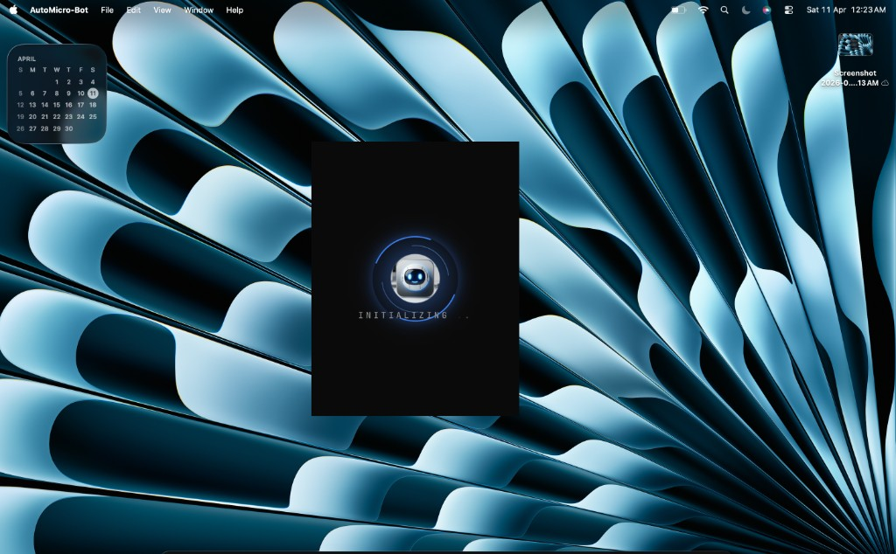
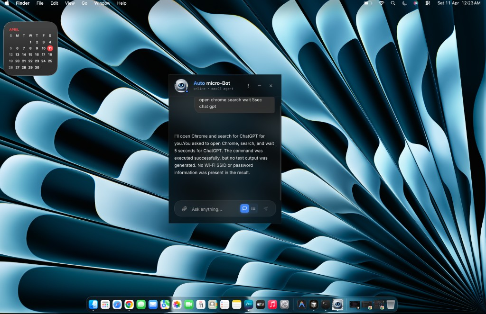
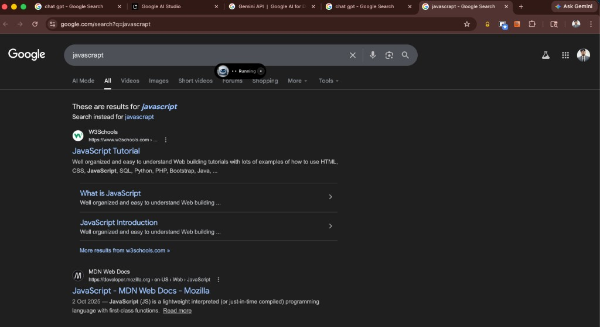
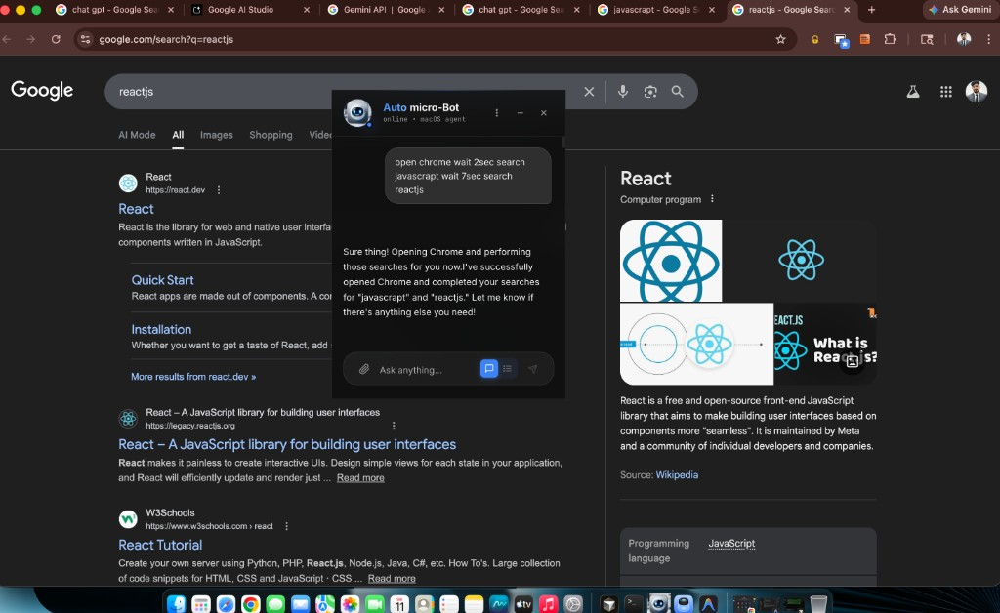
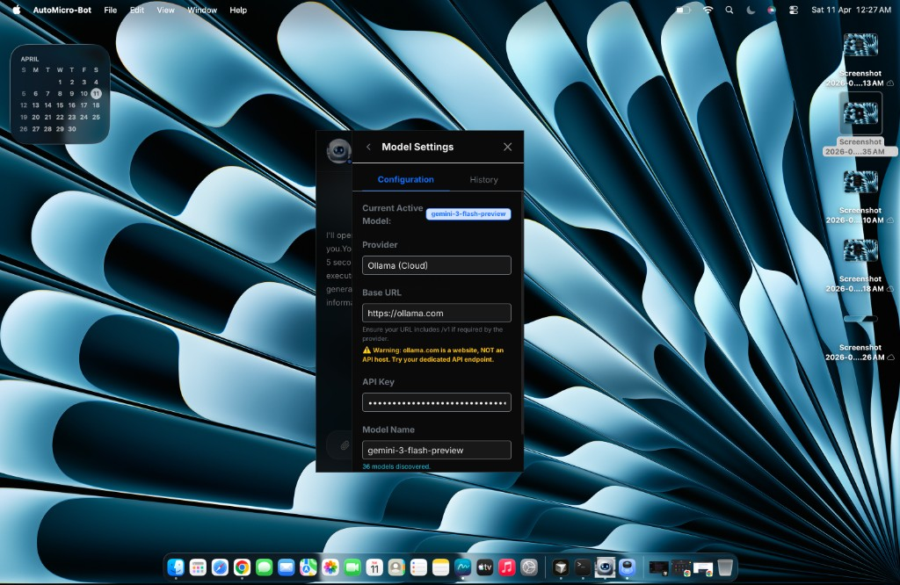
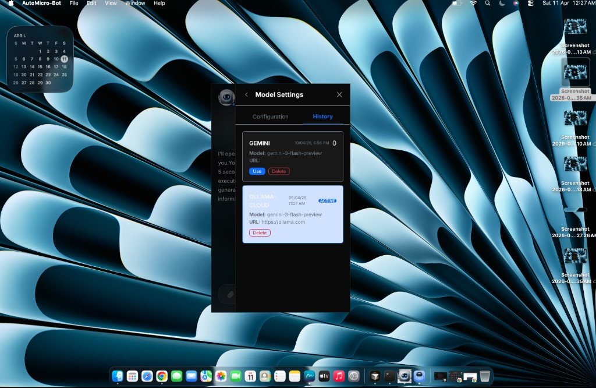

AutoMicro-Bot — Coverflow
Scroll horizontally (trackpad, wheel + shift, or scrollbar). Side panels tilt in 3D like a classic cover flow;
the centered shot is flat and largest.

Startup splash

Chat — browser automation

Demo — JavaScript search

Demo — React.js automation

Model Settings — configuration

Model Settings — history
Tip: click the strip once, then use ← → keys to snap between screenshots.